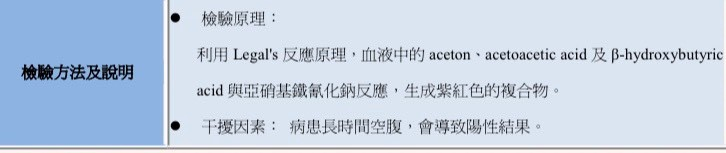
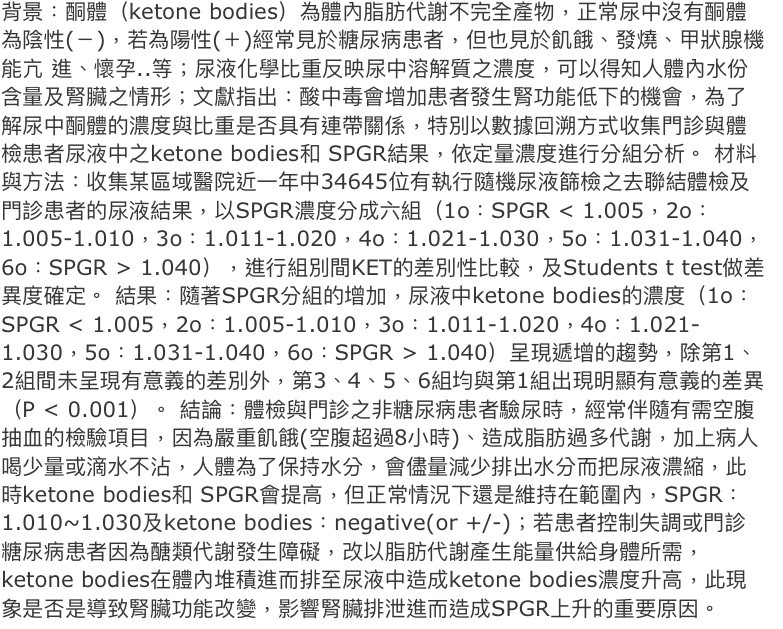
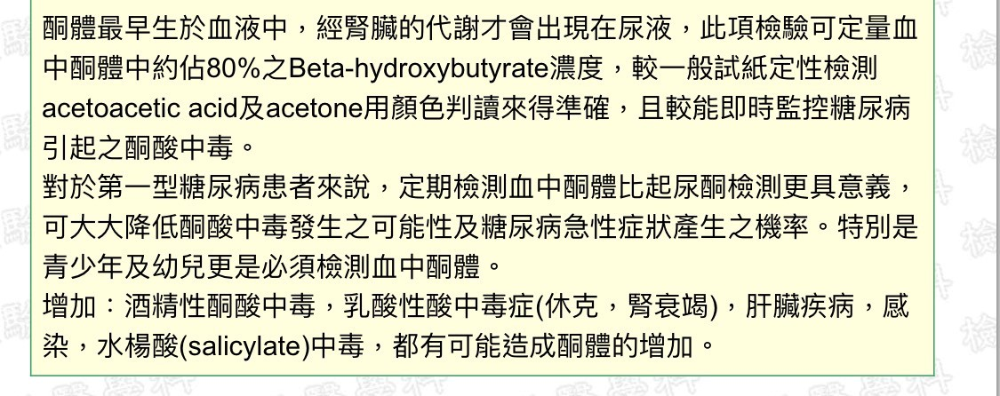
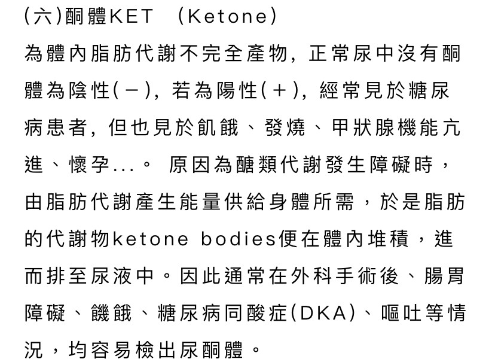

醫學測量及儀表(109-2)第A9組 學期報告第 二 次討論會議紀錄
時間：2021年3月29日19:00~21:00 地點：工學311
主席：洪子婷 記錄審訂：陳瑜婷
出席：10625139 陳瑜婷 10625156 洪子婷 10625256 杜品靜 10844105 陳依廷 10725150 蘇子鑒
主題：尿液試紙分工-ketone
Ⅰ.進度報告：
1. app架構圖確認
2. 計畫進度圖表繪製
Ⅱ.討論事項：
1. 尿液試紙分工-ketone
2. 計畫架構圖分工
Ⅲ.討論內容：
子婷：尿液試紙分工-ketone，介紹、檢測項目生理意義、顏色(RGB、HSV)、化學反應式、化學結構式、臨床病例。
依廷： 顏色是
Neg.： RGB (241,185,146)、HSV(24,39,94)、HEX：#F1B992
Trace 0.5： RGB (239,165,140 )、HSV(15,41,93)、HEX：#EFA58C
Small 1.5： RGB (228,128,138)、HSV(354,43,89)、HEX：#E4808A
Moderate 4.0： RGB (189,86,113)、HSV(344,54,74) 、HEX：#BD5671
Large 8.0： Moderate： RGB(149,58,101)、HSV(331,61,58)、HEX：#953A65
Large 16： RGB(116,39,85)、HSV(324,66,45)、HEX：#742755
品靜：


子婷：

瑜婷：

子婷：目前還差化學反應式、化學成分結構式、臨床病例與處置
瑜婷：臨床病例與處理我再整理補上
依廷：子鑑，剩下的化學反應式、結構式你請你查一下
子鑑：好，沒問題
子婷：再來討論APP的計畫分工
瑜婷：我可以手繪APP的初步架構圖
依廷：我可以做APP介面排版製作的部分
子婷：那有需要幫忙，其他人隨時準備。
品靜：還有魚骨圖、甘特圖、架構圖等，目前要不要先製作前三項
依廷：可以，那再麻煩有空的人先製作，製作完先行告知
Ⅳ.決議事項：
1. 尿液試紙分工-ketone確認，不足的資料瑜婷、子鑒補全
2. APP連動介面製作確認，並2週內完成。